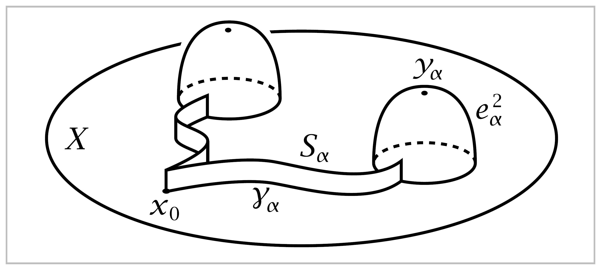
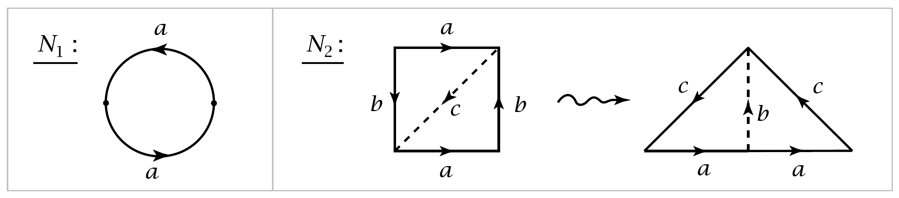
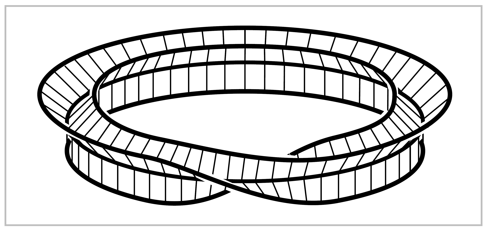
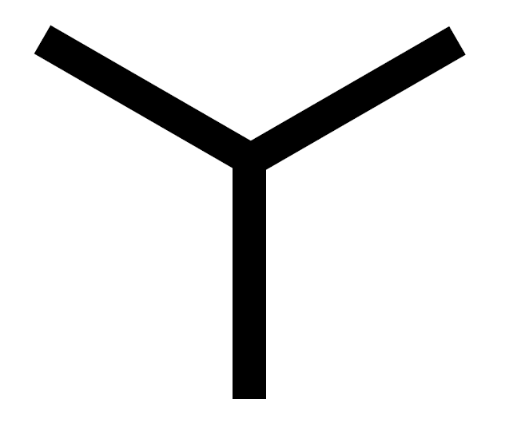
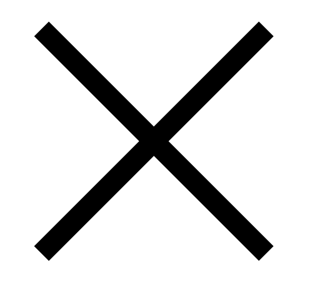

Applications to Cell Complexes#
For the remainder of this section we shall be interested in cell complexes, and in particular in how the fundamental group is affected by attaching \(2\)-cells.
Suppose we attach a collection of \(2\)-cells \(e^2_\alpha\) to a path-connected space \(X\) via maps \(\varphi_\alpha : S^1 \rightarrow X\), producing a space \(Y\). If \(s_0\) is a basepoint of \(S^1\) then \(\varphi_\alpha\) determines a loop at \(\varphi_\alpha(s_0)\) that we shall call \(\varphi_\alpha\), even though technically loops are maps \(I \rightarrow X\) rather than \(S^1 \rightarrow X\). For different \(\alpha\)’s the basepoints \(\varphi_\alpha(s_0)\) of these loops \(\varphi_\alpha\) may not all coincide. To remedy this, choose a basepoint \(x_0 \in X\) and a path \(\gamma_\alpha\) in \(X\) from \(x_0\) to \(\varphi_\alpha(s_0)\) for each \(\alpha\). Then \(\gamma_\alpha \varphi_\alpha \bar{\gamma}_\alpha\) is a loop at \(x_0\). This loop may not be nullhomotopic in \(X\), but it will certainly be nullhomotopic after the cell \(e^2_\alpha\) is attached. Thus the normal subgroup \(N \subset \pi_1(X,x_0)\) generated by all the loops \(\gamma_\alpha \varphi_\alpha \bar{\gamma}_\alpha\) for varying \(\alpha\) lies in the kernel of the map \(\pi_1(X,x_0)\rightarrow \pi_1(Y,x_0)\) induced by the inclusion \(X \hookrightarrow Y\).
Proposition 1.26. (a) If \(Y\) is obtained from \(X\) by attaching \(2\)-cells as described above, then the inclusion \(X \hookrightarrow Y\) induces a surjection \(\pi_1(X,x_0)\rightarrow \pi_1(Y,x_0)\) whose kernel is \(N\). Thus \(\pi_1(Y) \approx \pi_1(X)/N\) . (b) If \(Y\) is obtained from \(X\) by attaching \(n\)-cells for a fixed \(n>2\), then the inclusion \(X \hookrightarrow Y\) induces an isomorphism \(\pi_1(X,x_0) \approx \pi_1(Y, x_0)\). (c) For a path-connected cell complex \(X\) the inclusion of the \(2\)-skeleton \(X^2 \hookrightarrow X\) induces an isomorphism \(\pi_1(X^2, x_0) \approx \pi_1(X,x_0)\).
It follows from (a) that \(N\) is independent of the choice of the paths \(\gamma_\alpha\), but this can also be seen directly: If we replace \(\gamma_\alpha\) by another path \(\eta_\alpha\) having the same endpoints, then \(\gamma_\alpha \varphi_\alpha \bar{\gamma}_\alpha\) changes to \(\eta_\alpha \varphi_\alpha \bar{\eta}_\alpha=(\eta_\alpha \bar{\gamma}_\alpha)\gamma_\alpha \varphi_\alpha \bar{\gamma}_\alpha (\gamma_\alpha \bar{\eta}_\alpha)\), so \(\gamma_\alpha \varphi_\alpha \bar{\gamma}_\alpha\) and \(\eta_\alpha \varphi_\alpha \bar{\eta}_\alpha\) define conjugate elements of \(\pi_1(X,x_0)\).
Proof: (a) Let us expand \(Y\) to a slightly larger space \(Z\) that deformation retracts onto \(Y\) and is more convenient for applying van Kampen’s theorem.
{kind=link}
The space \(Z\) is obtained from \(Y\) by attaching rectangular strips \(S_\alpha = I \times I\), with the lower edge \(I \times \{0\}\) attached along \(\gamma_\alpha\), the right edge \(\{1\} \times I\) attached along an arc that starts at \(\varphi_\alpha(s_0)\) and goes radially into \(e^2_\alpha\), and all the left edges \(\{0\} \times I\) of the different strips identified together. The top edges of the strips are not attached to anything, and this allows us to deformation retract \(Z\) onto \(Y\).
In each cell \(e^2_\alpha\) choose a point \(y_\alpha\) not in the arc along which \(S_\alpha\) is attached, Let \(A=Z-\bigcup _\alpha \{y_\alpha\}\) and let \(B=Z-X\). Then \(A\) deformation retracts onto \(X\), and \(B\) is contractible. Since \(\pi_1(b)=0\), van Kampen’s theorem applied to the cover \(\{A,B\}\) says that \(\pi_1(Z)\) is isomorphic to the quotient of \(\pi_1(A)\) by the normal subgroup genertated by the image of the map \(\pi_1(A \cap B) \rightarrow \pi_1(A)\). More specifically, choose a basepoint \(z_0 \in A \cap B\) near \(x_0\) on the segment where all the strips \(S_\alpha\) intersect, and choose loops \(\delta_\alpha\) in \(A\cap B\) based at \(z_0\) representing the elements of \(\pi_1(A,z_0)\) corresponding to \([\gamma_\alpha \varphi_\alpha \bar{\gamma_\alpha}] \in \pi_1(A,x_0)\) under the basepoint-change isomorphism \(\beta_h\) for \(h\) the line segment connecting \(z_0\) to \(x_0\) in the intersection of the \(S_\alpha\)’s. To finish the proof of part (a) we just need to check that \(\pi_1(A \cap B, z_0)\) is generated by the loops \(\delta_\alpha\). This can be done by another application of van Kampen’s theorem, this time to the cover of \(A \cap B\) by the open sets \(A_\alpha = A \cap B - \bigcup _{\beta \neq \alpha} e^2_\beta\). Since \(A_\alpha\) deformation retracts onto a circle in \(e^2_\alpha - \{y_\alpha\}\), we have \(\pi_1(A_\alpha, z_0) \approx \mathbb{Z}\) generated by \(\delta_\alpha\).
The proof of (b) follows the same plan with cells \(e^n_\alpha\) instead of \(e^2_\alpha\). The only difference is that \(A_\alpha\) deformation retracts onto a sphere \(S^{n-1}\) so \(\pi_1(A_\alpha)=0\) if \(n>2\) by Proposition 1.14. Hence \(\pi_1(A \cap B) = 0\) and the result follows.
Part (c) follows from (b) by induction when \(X\) is finite-dimensional, so \(X=X^n\) for some \(n\). When \(X\) is not finite-dimensional we argue as follows. Let \(f:I \rightarrow X\) be a loop at the basepoint \(x_0 \in X^2\). This has compact image, which must lie in \(X^n\) for some \(n\) by Proposition A.1 in the Appendix. Part (b) then implies that \(f\) is homotopic to a loop in \(X^2\). Thus \(\pi_1(X^2, x_0) \rightarrow \pi_1(X, x_0)\) is surjective. To see that it is also injective, suppose that \(f\) is a loop in \(X^2\) which is nullhomotopic in \(X\) via a homotopy \(F:I \times I \rightarrow X\). This has compact image lying in some \(X^n\), and we can assume \(n >2\). Since \(\pi_1(X^2, x_0) \rightarrow \pi_1(X^n , x_0)\) is injective by (b), we conclude that \(f\) is nullhomotopic in \(X^2\). ◻
As a first application we compute the fundamental group of the orientable surface \(M_g\) of genus \(g\). This has a cell structure with one \(0\)-cell, \(2g \quad 1\)-cells, and one \(2\)-cell, as we saw in Chapter 0. The \(1\)-skeleton is a wedge sum of \(2g\) circles, with fundamental group free on \(2g\) generators. The \(2\)-cell is attached along the loop given by the product of the commutators of these generators, say \([a_1,b_1] \cdots [a_g,b_g]\). Therefore
where \(\langle g_\alpha | r_\beta \rangle\) denotes the group with generators \(g_\alpha\) and relators \(r_\beta\), in other words, the free group on the generators \(g_\alpha\) modulo the normal subgroup generated by the words \(r_\beta\) in these generators.
Corollary 1.27. The surface \(M_g\) is not homeomorphic, or even homotopy equivalent, to \(M_h\) if \(g \neq h\).
Proof: The abelianization of \(\pi_1(M_g)\) is the direct sum of \(2g\) copies of \(\mathbb{Z}\). So if \(M_g \simeq M_h\) then \(\pi_1(M_g) \approx \pi_1(M_h)\), hence the abelianizations of these groups are isomorphic, which implies \(g=h\). ◻
Nonorientable surfaces can be treated in the same way. If we attach a \(2\)-cell to the wedge sum of \(g\) circles by the word \(a^2_1 \cdots a^2_g\) we obtain a nonorientable surface \(N_g\). For example, \(N_1\) is the projective plane \(\mathbb{R}P^2\), the quotient of \(D^2\) with antipodal points of \(\partial D^2\) identified, and \(N_2\) is the Klein bottle, though the more usual representation of the Klein bottle is as a square with opposite sides identified via the word \(aba^{-1}b\).
{kind=link}
If one cuts the square along a diagonal and reassembles the resulting two triangles as shown in the figure, one obtains the other representation as a square with sides identified via the word \(a^2c^2\). By the proposition, \(\pi_1(N_g) \approx \langle a_1, \cdots , a_g | a^2_1 \cdots a^2_g \rangle\). This abelianizes to the direct sum of \(\mathbb{Z}_2\) with \(g-1\) copies of \(\mathbb{Z}\) since in the abelianization we can rechoose the generators to be \(a_1, \cdots , a_{g-1}\) and \(a_1 + \cdots + a_g\), with \(2(a_1 + \cdots + a_g) = 0\). Hence \(N_g\) is not homotopy equivalent to \(N_h\) if \(g \neq h\), nor is \(N_g\) homotopy equivalent to any orientable surface \(M_h\).
Here is another application of the preceding proposition:
Corollary 1.28. For every group \(G\) there is a \(2\)-dimensional cell complex \(X_G\) with \(\pi_1(X_G) \approx G\).
Proof: Choose a presentation \(G= \langle g_\alpha | r_\beta \rangle\). This exists since every group is a quotient of a free group, so the \(g_\alpha\)’s can be taken to be the generators of this free group with the \(r_\beta\)’s generators of the kernel of the map from the free group to \(G\). Now construct \(X_G\) from \(\bigvee _\alpha S^1_\alpha\) by attaching \(2\)-cells \(e^2_\beta\) by the loops specified by the words \(r_\beta\). ◻
Example 1.29. If \(G=\langle a | a^n \rangle = \mathbb{Z}_n\) then \(X_G\) is \(S^1\) with a cell \(e^2\) attached by the map \(z \mapsto z^n\), thinking of \(S^1\) as the unit circle in \(\mathbb{C}\). When \(n=2\) we get \(X_G=\mathbb{R}P^2\), but for \(n>2\) the space \(X_G\) is not a surface since there are \(n\) ‘sheets’ of \(e^2\) attached at each point of the circle \(S^1 \subset X_G\).
{kind=link}
For example, when \(n=3\) one can construct a neighborhood \(N\) of \(S^1\) in \(X_G\) by taking the product of the graph  with the interval \(I\), and then identifying the two ends of this product via a one-third twist as shown in the figure. The boundary of \(N\) consists of a single circle, formed by the three endpoints of each cross section of \(N\). To complete the construction of \(X_G\) from \(N\) one attaches a disk along the boundary circle of \(N\). This cannot be done in \(\mathbb{R}^3\), though it can in \(\mathbb{R}^4\). For \(n=4\) one would use the graph  instead of , with one-quarter twist instead of one-third twist. For larger \(n\) one would use an \(n\)-pointed ‘asterisk’ and a \(\frac{1}{n}\) twist.
{kind=link}
{kind=link}